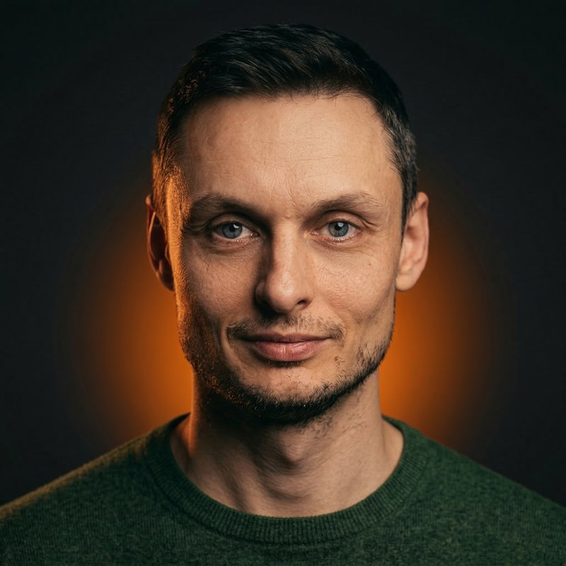
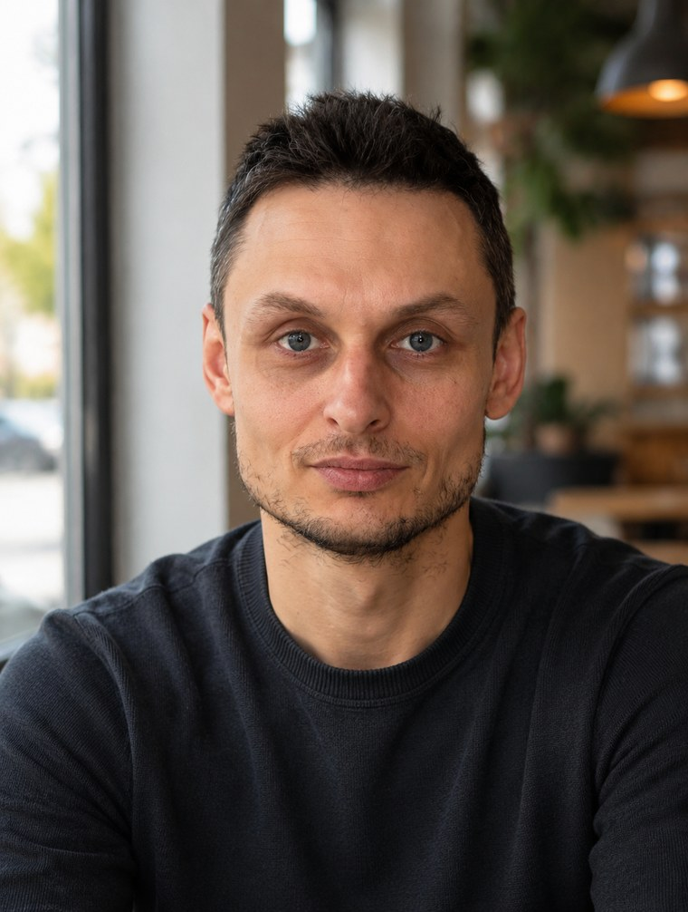

Две недели практики, которые помогают переучить ум
с привычного "мне не хватает" на спокойное "мне хватает"
Сколько бы ни приходило, внутри всё равно "мало": к концу месяца снова впритык.
Вечно ни на что не хватает: день закончился, а список дел нет.
Постоянно решаете чужие проблемы, а до себя очередь так и не доходит.
От близких и не только: стараетесь много, а слышите редко.
Когда внутри звучит "даже мечтать себе не разрешаю".
Эти пять направлений назвали читатели моего канала, когда я спросил, где у них чаще всего звучит "мне не хватает". Направления разные, а корень один. Он не в кошельке и не в календаре. Нехватка — это привычка ума. И с ней можно работать.
Про мышление изобилия написаны сотни книг, и вы наверняка что-то из этого встречали. Читаешь, узнаёшь себя, киваешь. Решаешь жить по-новому. А через день привычка тихо возвращает всё на место, и вот мы снова считаем, чего не хватает.
Так происходит не потому, что вы слабы или мало старались. Привычку ума нельзя переубедить пониманием: её можно только переучить практикой. А практика в одиночку держится на силе воли, и её хватает ненадолго.
Поэтому интенсив. Небольшая группа, четырнадцать дней, один общий ритм. Когда рядом ещё полтора десятка человек держат ту же практику, ваша перестаёт быть чем-то неподъёмным.
Если мы с вами ещё не знакомы, посмотрите это видео. В нём я разбираю, откуда берётся ощущение нехватки и почему оно не уходит от усилий и понимания. Заодно познакомитесь со мной и с тем, как я работаю.
Пять этапов: от обнаружения корня до умножения силой группы
Сразу в дело: находим ваш личный узор нехватки. Как он звучит, откуда пришёл, от кого достался. У каждого он свой, и пока он не назван, он управляет незаметно.
Расчистка. Разбираемся, почему старые обиды и счёты держат нехватку на месте, и проходим четыре сессии прощения по анкетам, которые я использую в работе. Это сердце интенсива и та работа, которую в подобных программах встречаю редко.
Первый полный цикл проявления на небольшой живой цели. Узнаете, почему аффирмации не работают, и пройдёте первые четыре из шести шагов: осознать, выразить, увидеть, прочувствовать.
Самая тонкая часть: передать и отпустить. Учимся держать направление, не вцепляясь в сценарий. В финале недели полный проход анкеты Проявления и слово, которым он завершается: "Сделано!"
Живой созвон всей группой: подводим итоги, усиливаем намерение каждого силой группы. Замер точки Б и план на 30 дней вперёд, чтобы практика жила дальше без меня.

Александр Комар. Практикующий коуч. 500+ проведённых сессий.
За плечами профессиональная переподготовка по психологическому консультированию и две ступени Школы духовной психологии. Работаю в коучинговом, а не в клиническом формате. В основе моей работы — метод трёх "П": Принятие, Прощение, Покой.
Тему нехватки я не вычитал в книгах, а прожил сам: как звучит это "мне не хватает", знаю изнутри. Именно поэтому интенсив построен не на теории, а на практике, которая в своё время развернула меня.
Подробнее обо мне и моей работе — на основном сайте.
Зависит от момента входа. Это честная лесенка, а не таймер со скидкой: чем раньше вы решитесь, тем ниже цена
Это цены первого потока: групповой формат я провожу впервые. Следующие потоки будут дороже. Какая ступень открыта прямо сейчас, скажу в личке.
Денег с неба и новой жизни за две недели.
Рабочий метод из моей практики, ежедневные задания и синергию людей рядом.
Тема нехватки отозвалась не умом, а где-то в груди. Вы уже читали, слушали, понимали и даже пробовали, но в жизни это мало что поменяло. Внутри тихо, но ясно звучит: "хочу уже наконец выбраться".
Ждёте, что за две недели с неба посыплются деньги. Или хочется, чтобы кто-то пришёл и всё сделал за вас. Я иду рядом и даю метод, но шаги делаете вы сами. Готовым на сто процентов приходить при этом не нужно: хватает небольшой искренней готовности, остальное разворачивается уже в пути.
И маленький тест по ощущениям. Представьте, что вы уже внутри и завтра приходит первое задание. Что поднимается: лёгкое предвкушение или тяжёлое "надо"? Если первое — это ваше. Если второе — спешить не нужно, и это тоже нормально.
30-40 минут. Задания построены так, чтобы встраиваться в обычный день: большинство можно делать вечером, в своём темпе.
Да. Опыт не нужен: каждый шаг объясняется с нуля, а на вопросы я отвечаю в чате каждый день. Нужна только готовность делать небольшие задания.
Материалы остаются в канале, записи созвонов сохраняются. В середине первой недели есть день тишины, чтобы догнать и выдохнуть. Единственное, что важно проходить вместе со всеми, — практики второй недели: там группа идёт день в день.
И да, и нет. Инструменты приземлённые: наблюдение, письменные практики, прощение, работа с целью. Но сама работа идёт глубже привычных упражнений: часть практик обращена к доверию жизни. Верить ни во что не требуется. Достаточно допустить и проверить на собственном опыте.
Вы пишете мне в личку, я отвечаю на вопросы и присылаю ссылку на оплату. Всё официально: оплата на ИП, с чеком.
За пару дней до старта вы получите приглашение в закрытый канал, приветствие, правила группы и первое небольшое задание-замер. Старт основной программы в понедельник, 3 августа.